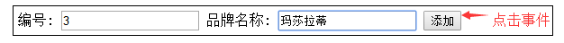
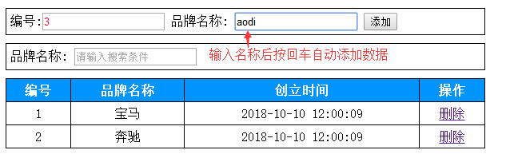

Vue基础-day01
课前准备
浏览器插件
- Vue.js devtools
VS Code插件
自动补全标签
- Auto Close Tag
- Auto Complete Tag
- Auto Rename Tag
开启一个服务器浏览HTML网页，第一次使用需要Ctrl + Shift + p输入 live server选择open
- Live Server
路径自动补全
- Path Intellisense
vue语法高亮和自动补全代码
- Vetur
- VueHelper
玩转Vs code
Vs Code设置
文件--->首选项--->设置，然后添加如下代码：
"emmet.syntaxProfiles": { "vue-html": "html", "vue": "html" }, "emmet.includeLanguages": { "vue-html": "html", "vue": "html" }课程介绍
为什么学习Vue

什么是MVVM
- M => Model(数据模型)
- V => View(视图模型,负责将数据模型转化成UI展现出来，就是那些DOM结构)
- VM => ViewModel(一个同步View和Model的对象)

Vue初体验
<!DOCTYPE html>
<html lang="en">
<head>
<meta charset="UTF-8">
<meta name="viewport" content="width=device-width, initial-scale=1.0">
<meta http-equiv="X-UA-Compatible" content="ie=edge">
<title>Document</title>
<!-- 1. 引入vue文件 -->
<script src="./vue2.js"></script>
</head>
<body>
<!-- 如果超过vue实例的管辖范围，这个{{}}作用就会失效 -->
<div>{{msg}}</div>
<div id="app">
<!-- 5. 展示数据：通过插值表达式{{}} ，作用是专门用来渲染文本-->
<h1>{{msg}}</h1>
</div>
<script>
// 2. 创建vue实例，作用：他会监管我们的html代码
var vm = new Vue({
// 3. 通过一个el属性来指定vue实例的监管范围,后面跟一个id
el: '#app',
// 4. 用data属性将要展示的变量存起来,data后面跟一个对象
data: {
msg: 'hello world'
}
})
</script>
</body>
</html>
Vue常用系统指令
插值表达式
数据绑定最常见的形式，其中最常见的是使用插值表达式，写法是{{}} 中写表达式
例如：<span>Message: {{ msg }}</span>
Mustache 标签将会被替代为对应数据对象上 msg 属性（msg定义在data对象中）的值。
无论何时，绑定的数据对象上 msg 属性发生了改变，插值处的内容都会更新。
{{}}对JavaScript 表达式支持，例如：
{{ number + 1 }}
{{ ok ? 'YES' : 'NO' }}
{{ message.split('').reverse().join('') }}
但是有个限制就是，每个绑定都只能包含单个表达式，如下表达式无效：
<!-- 这是语句，不是表达式 -->
{{ var a = 1 }}
<!-- 这也是语句，不是表达式 -->
{{ number++ }} 会报警告：vue2.js:482 [Vue warn]: You may have an infinite update loop in a component render function.
<!-- 流控制也不会生效，请使用三元表达式 -->
{{ if (ok) { return message } }}
v-text
<!-- v-text可以将一段文本渲染到指定的元素中,例如： -->
<div v-text="msg"></div>
new Vue({
data:{
msg:'hello world'
}
});
<!-- 输出结果：-->
<div>hello world</div>
v-html
差值表达式和v-text会将数据解释为纯文本，而非 HTML 。
为了输出真正的 HTML ，你需要使用 v-html 指令：
例如：
<div v-html="rawHtml"></div>
new Vue({
data:{
rawHtml:'<h1>hello world</h1>'
}
})
被插入的内容都会被当做 HTML,但是对于没有HTML标签的数据绑定时作用同v-text和{{}}
v-bind
1、作用：可以给html元素或者组件动态地绑定一个或多个特性，例如动态绑定style和class
2、举例：
1、img的src从imageSrc变量中取得
<img v-bind:src="imageSrc" >
2、从classA, classB两个变量的值作为class的值，
结果是：<div class="A B">classA, classB</div>
<div v-bind:class="[classA, classB]">classA, classB</div>
3、isRed变量如果为true，则class的值为red，否则没有
<div v-bind:class="{ red: isRed }">isred</div>
4、div的class属性值一定有classA变量的值，而是否有classB和classC变量的值取决于isB和isC是否为true，二者一一对应
<div v-bind:class="[classA, { classB: isB, classC: isC }]">数组对象</div>
5、变量加常量
<div v-bind:style="{ fontSize: size + 'px' }">size22</div>
6、变量加常量的另一种写法
<img v-bind="{src:imageSrc+'?v=1.0'}" >
7、对象数组
<div v-bind:style="[styleObjectA, styleObjectB]">styleObjectA, styleObjectB</div>
3、缩写形式
<img :src="imageSrc">
<div :class="[classA, classB]">classA, classB</div>
<div v-bind:class="{ red: isRed }">isred</div>
<div v-bind:class="[classA, { classB: isB, classC: isC }]">数组对象</div>
<div v-bind:style="{ fontSize: size + 'px' }">size22</div>
<img v-bind="{src:imageSrc+'?v=1.0'}" >
<div v-bind:style="[styleObjectA, styleObjectB]">styleObjectA, styleObjectB</div>
vue对象初始化
<script>
// 实例化vue对象（MVVM中的View Model）
new Vue({
// vm控制的区块为id为app的div，此div中的所有vue指令均可以被vm解析
el:'#app',
data:{
// 数据 （MVVM中的Model）
imageSrc:'http://157.122.54.189:8998/vue/vuebase/chapter1/imgs/d1-11.png',
isRed:true,
classA:'A',
classB:'B',
isB:true,
isC:true,
size:22,
styleObjectA:{color:'red'},
styleObjectB:{fontSize:'30px'}
},
methods:{
}
})
</script>
v-for
<!--
v-for用法：
item in Array
(item, index) in Array
value in Object
(value, key, index) in Object
:key属性具有唯一性，不能重复，它能够唯一标识数组的每一项
将来数据中的某一项的值发生了改变，则v-for只会更新当前项对应的这个dom元素的值，而不是更新整个数据，从而提高效率，参考https://www.zhihu.com/question/61064119/answer/183717717
注意：以下变动不会触发视图更新
1. 通过索引给数组设置新值
2. 通过length改变数组
解决：
1. Vue.set(arr, index, newValue)
2. arr.splice(index, 1, newValue)
-->
<ul>
<li v-for="item in user">{{item.name}}</li>
<li v-for="(item, index) in user" :key="index">{{index}}.{{item.name}}</li>
<li>---------------华丽的分割线---------------</li>
<li v-for="value in boss">{{value}}</li>
<li v-for="(value, key, index) in boss"> {{index}}.{{key}}:{{value}}</li>
</ul>
<script>
var vm = new Vue({
el: '#app',
data: {
user: [
{name: 'jack'},
{name: 'neil'},
{name: 'rose'}
],
boss: {
name: '马云',
age: 50,
money: 1000000002030
}
}
})
</script>
v-model
1、在表单控件或者组件上创建双向绑定
2、v-model仅能在如下元素中使用：
input
select
textarea
components（Vue中的组件）
3、举例：
<input type="text" v-model="uname" />
new Vue({
data:{
uname:'' //这个属性值和input元素的值相互一一对应，二者任何一个的改变都会联动的改变对方
}
})
v-on
1、作用：绑定事件监听，表达式可以是一个方法的名字或一个内联语句，
如果没有修饰符也可以省略，用在普通的html元素上时，只能监听 原生
DOM 事件。用在自定义元素组件上时，也可以监听子组件触发的自定义事件。
2、常用事件：
v-on:click
v-on:keydown
v-on:keyup
v-on:mousedown
v-on:mouseover
v-on:submit
....
3、示例：
<!-- 方法处理器 -->
<button v-on:click="doThis"></button>
<!-- 内联语句 -->
<button v-on:click="doThat('hello', $event)"></button>
<!-- 阻止默认行为，没有表达式 -->
<form v-on:submit.prevent></form>
5、v-on的缩写形式：可以使用@替代 v-on:
<button @click="doThis"></button>
6、按键修饰符
触发像keydown这样的按键事件时，可以使用按键修饰符指定按下特殊的键后才触发事件
写法：
<input type="text" @keydown.enter="kd1"> 当按下回车键时才触发kd1事件
由于回车键对应的keyCode是13，也可以使用如下替代
<input type="text" @keydown.13="kd1"> 当按下回车键时才触发kd1事件
但是如果需要按下字母a（对应的keyCode=65）才触发kd1事件，有两种写法：
1、由于默认不支持a这个按键修饰符，需要Vue.config.keyCodes.a = 65 添加一个对应,所以这种写法为：
Vue.config.keyCodes.a = 65
<input type="text" @keydown.a="kd1"> 这样即可触发
2、也可以之间加上a对应的数字65作为按键修饰符
<input type="text" @keydown.65="kd1"> 这样即可触发
键盘上对应的每个按键可以通过 http://keycode.info/ 获取到当前按下键所对应的数字
v-on按键修饰符
作用说明
文档地址：https://cn.vuejs.org/v2/guide/events.html#键值修饰符 在监听键盘事件时，我们经常需要监测常见的键值。 Vue 允许为 v-on 在监听键盘事件时添加按键修饰符： .enter .tab .delete (捕获 “删除” 和 “退格” 键) .esc .space .up .down .left .right可以自定义按键别名
// 在Vue2.0版本中扩展一个f1的按键修饰符写法： Vue.config.keyCodes.f1 = 112 // 使用 <button @keyup.f1="someFunc"></button>
v-if
1、作用：根据表达式的值的真假条件来决定是否渲染元素，如果条件为false不渲染（达到隐藏元素的目的），为true则渲染。在切换时元素及它的数据绑定被销毁并重建
2、示例：
<!-- Handlebars 模板 -->
{{#if isShow}}
<h1>Yes</h1>
{{/if}}
通常我们使用写法居多：
<h1 v-if="isShow">Yes</h1>
也可以用 v-else 添加一个 “else” 块：
<h1 v-if="isShow">Yes</h1>
<h1 v-else>No</h1>
注意：v-else 元素必须紧跟在 v-if 元素否则它不能被识别。
new Vue({
data:{
isShow:true
}
});
v-show
1、根据表达式的真假值，切换元素的 display CSS 属性，如果为false，则在元素上添加 display:none来隐藏元素，否则移除display:none实现显示元素
2、示例：
<h1 v-show="isShow">Yes</h1>
new Vue({
data:{
isShow:true
}
});
3、v-if和v-show的总结：
v-if和v-show 都能够实现对一个元素的隐藏和显示操作,但是v-if是将这个元素添加或者移除到dom中，而v-show
是在这个元素上添加 style="display:none"和移除它来控制元素的显示和隐藏的
v-cloak
v-cloak指令保持在元素上直到关联实例结束编译后自动移除，v-cloak和 CSS 规则如 [v-cloak] { display: none } 一起用时，这个指令可以隐藏未编译的 Mustache 标签直到实例准备完毕。
通常用来防止{{}}表达式闪烁问题
例如：
<style>
[v-cloak] { display: none }
</style>
<!-- 在span上加上 v-cloak和css样式控制以后，浏览器在加载的时候会先把span隐藏起来，知道 Vue实例化完毕以后，才会将v-cloak从span上移除，那么css就会失去作用而将span中的内容呈现给用户 -->
<span v-cloak>{{msg}}</span>
new Vue({
data:{
msg:'hello ivan'
}
})
案例-利用系统指令实现品牌案例管理
目的
通过案例熟悉Vue系统指令的用法和结构的写法练习，做到知识点的巩固和学会 应用，并且在案例的扩展需求中，学习Vue新知识点，做到先有需求，再有知识点 学习，最后到知识点的应用，让学员学习知识点的同时学会知识点的应用
资源准备
效果图

案例html结构
<body> <div id="app"> <div class="add"> 编号:<input type="text"> 品牌名称:<input type="text"> <input type="button" value="添加"> </div> <div class="add"> 品牌名称:<input type="text" placeholder="请输入搜索条件"> </div> <div> <table class="tb"> <tr> <th>编号</th> <th>品牌名称</th> <th>创立时间</th> <th>操作</th> </tr> <tr > <td colspan="4">没有品牌数据</td> </tr> <!-- 动态生成内容tr --> </table> </div> </div> </body>案例css样式
<style> #app{ width:600px; margin:10px auto; } .tb{ border-collapse:collapse; width: 100%; } .tb th{ background-color: #0094ff; color:white; } .tb td,.tb th{ padding:5px; border:1px solid black; text-align: center; } .add{ padding: 5px; border:1px solid black; margin-bottom: 10px; } </style>
功能-数据展示实现
在 data 中添加 一个名称为 list的变量，类型为数组,存放品牌数据的对象,格式为:{id:1,name:'宝马',ctime:Date()}
var vm = new Vue({ el: '#app', data: { list: [ {id: 1, title: 'LV', ctime: new Date()}, {id: 2, title: 'CC', ctime: new Date()}, {id: 3, title: 'CK', ctime: new Date()}, ] } })在table中的“动态生成内容tr”位置使用v-for指令遍历list数组数据生成表格内容行，注意要写
:key<tr v-for="(item, index) in list" :key="index"> <td>{{item.id}}</td> <td>{{item.title}}</td> <td>{{item.ctime}}</td> <td> <a href="javascript:void(0)">删除</a> </td> </tr>处理 “没有品牌数据” 提示问题,代码如下
利用：v-if进行判断，当list为空时，才显示没有品牌数据 <tr v-if="list.length==0"> <td colspan="4">没有品牌数据</td> </tr>
功能-数据删除
给按钮绑定删除方法，并传入一个id
<a href="javascript:void(0)" @click="deleteData(item.id)">删除</a>Vue实例中定义删除的方法
methods: { deleteData(id) { // 返回满足函数条件的数组的项的index var index = this.list.findIndex(item => { return item.id === id }) // 删除该索引对应的值 this.list.splice(index, 1) } }
功能-数据添加
效果图 
实现步骤1：在Vue对象实例的data中添加一个product对象{id:0,name:'',ctime:Date()}
new Vue({ el: '#app', data: { product:{id:0,name:'',ctime:Date()}, list:[ {id:1,name:'宝马',ctime:Date()}, {id:2,name:'奔驰',ctime:Date()} ] }, methods: { } })实现步骤2：在编号和品牌名称文本框中利用v-model对product对象中的id和name属性进行一一绑定 同时在添加按钮上利用 v-on:click注册事件addData
编号:<input type="text" v-model="product.id"> 品牌名称: <input type="text" v-model="product.name"> <input type="button" value="添加" @click="addData">实现步骤3：在Vue对象实例的methods中添加一个 addData的方法实现添加逻辑即可完成
new Vue({ // vm控制的区块为id为app的div，此div中的所有vue指令均可以被vm解析 el: '#app', data: { product:{id:0,name:'',ctime:Date()}, list:[ {id:1,name:'宝马',ctime:Date()}, {id:2,name:'奔驰',ctime:Date()} ] }, methods: { addData(){ // 修改品牌添加时间为当前时间 this.product.ctime = Date(); // 添加数据到品牌列表中 this.list.push(this.product); // 清空product this.product = {id:0,name:'',ctime:Date()}; } } })
功能-按回车键添加数据
关键点：利用v-on的.enter按键修饰符实现，回车键的keycode=13 
品牌名称: <input type="text" v-model="product.name" @keydown.13="addData">
<!-- 或者 -->
品牌名称: <input type="text" v-model="product.name" @keydown.enter="addData">
功能-输入框自动聚焦
在vue中实现这个需求有三种方式：
- 可以使用document.getElementById()获取到文本框元素对象后调用其focus()方法和设置style属性
- 可以在文本框上元素上增加一个 ref="自定义名称"，再使用this.$refs.自定义名称.focus()和 this.$refs.自定义名称.style="color:red" 设置style属性
使用自定义指令实现封装
注意：前两种方式的代码需要写到生命周期事件：mounted(){}中
原生js操作DOM实现
// html代码 编号:<input type="text" v-model="product.id" id="id"> // vue对象mounted(){}中代码 mounted(){ document.getElementById('id').focus(); document.getElementById('id').style="color:red"; }ref方式实现
// html代码： 编号:<input type="text" v-model="product.id" ref="id"> // vue对象mounted(){}中代码 mounted(){ this.$refs.id.focus(); this.$refs.id.style="color:red"; }使用自定义指令
使用说明
- 利用Vue.directive('指令id',{inserted:function(el,binding){}})
参数说明
指令id可由程序员自行定义，注意和系统指令名称有所区别，例如： focus,在某个元素上具体使用的时候请在 指令id前面再加上v-,例如
<input v-focus>第二个参数是一个对象，其中inserted是一个函数，表示 “被绑定元素插入父节点时调用”
- inserted的参数：
- el参数：表示使用此自定义指令的dom对象
- binding参数：一个对象，包含以下属性：
- name：指令名，不包括 v- 前缀。
- value：指令的绑定值，例如：v-focus="colorvalue", value 的值是colorvalue这个变量的值，colorvalue定义在data(){}中
- expression：绑定值的字符串形式。例如 v-focus="colorvalue" ，expression 的值是 "colorvalue"
- inserted的参数：
开始使用Vue.directive()封装自定义指令v-focus实现光标自动定位
```html 1、定义指令color Vue.directive('color',{
inserted:function(el,binding){ //将颜色设置给使用v-color指令的元素上 el.style.color=binding.value; }});
2、 在dom元素上使用指令，注意加上前缀 v- 编号:
3、在Vue对象实例中的data(){}中定义colorvalue new Vue({ data: { colorvalue:'red' } });
### ref
ref的作用类似于document.getElementByID,在vue中想要获取一个dom对象或者组件对象，则只需要 在此元素上添加一个 ref="自定义名称" ，再使用 this.$refs.自定义名称即可获取
```html
<html>
<head>
<script src="vue2.js"></script>
</head>
<body>
<div id="app">
<span ref="sp"></span>
</div>
</body>
<script>
new Vue({
el:'#app',
methods:{
getobj:function(){
//获取到span元素的dom对象，类似于使用document.getElementByID('sp')
// spanobj就是span的dom对象，可以调用 style,innerHTML,innerText等进行操作
var spanobj = this.$refs.sp;
}
}
})
</script>
</html>
功能-时间格式化
// 定义全局过滤器datefmt
Vue.filter('datefmt',function(input){
var date = new Date(input);
var year = date.getFullYear();
var m = date.getMonth() + 1;
var d = date.getDate();
var fmtStr = year+'-'+m +'-'+d;
return fmtStr; //返回输出结果
});
// 调用, 注意datefmt的第一个参数默认就是管道符左边的值
<td>{{item.ctime | datefmt }}</td>
过滤器
私有过滤器
定义方式
可以在 new Vue({filters：{}})中的filters中注册一个私有过滤器 定义格式： new Vue({ el:'#app', filters:{ '过滤器名称':function(管道符号|左边对象的值,参数1,参数2,....) { return 对管道符号|左边参数的值做处理以后的值 }) } }); Vue2.0 调用过滤器传参写法： <span>{{ msg | 过滤器id('参数1','参数2' ....) }}</span>(应用示例)自定义私有过滤器实现日期格式化
1、 定义私有的日期格式化过滤器： new Vue({ el:'#app', data:{ time:new Date() }, filters:{ //定义在 VM中的filters对象中的所有过滤器都是私有过滤器 datefmt:function(input,splicchar){ var date = new Date(input); var year = date.getFullYear(); var m = date.getMonth() + 1; var d = date.getDate(); var fmtStr = year+splicchar+m +splicchar+d; return fmtStr; //返回输出结果 } } }); 2、使用 <div id="app"> {{ time | datefmt('-') }} //Vue2.0传参写法 </div>全局过滤器
定义方式
可以用全局方法 Vue.filter() 注册一个全局自定义过滤器，它接收两个参数：过滤器 ID 和过滤器函数。过滤器函数以值为参数，返回转换后的值 定义格式： Vue.filter('过滤器名称', function (管道符号|左边参数的值,其他参数1,其他参数2,....) { return 对管道符号|左边参数的值做处理以后的值 }) Vue2.0 使用：参数调用时用()，多个参数中间使用逗号分开 <span>{{ msg | 过滤器名称('参数1','参数2' ....) }}</span>(应用示例)自定义全局过滤器实现日期格式化
1、 定义全局的日期格式化过滤器： Vue.filter('datefmt',function(input,splicchar){ var date = new Date(input); var year = date.getFullYear(); var m = date.getMonth() + 1; var d = date.getDate(); var fmtStr = year+splicchar+m +splicchar+d; return fmtStr; //返回输出结果 }); 2、使用 <div id="app"> {{ time | datefmt('-') }} //Vue2.0传参写法 </div> <script> new Vue({ el:'#app1', data:{ time:new Date() } }); </script>